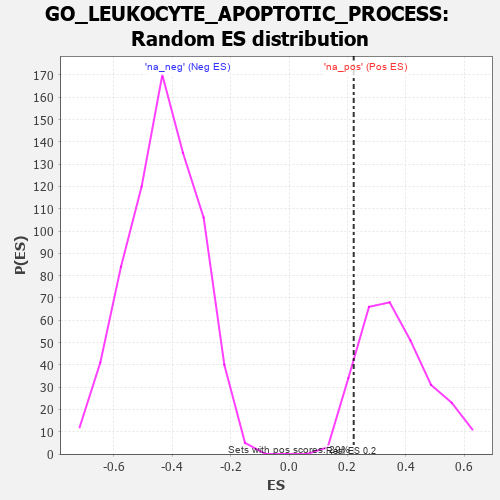

| | | Dataset | 7d |
| Phenotype | NoPhenotypeAvailable |
| Upregulated in class | na_pos |
| GeneSet | GO_LEUKOCYTE_APOPTOTIC_PROCESS |
| Enrichment Score (ES) | 0.22156602 |
| Normalized Enrichment Score (NES) | 0.6083324 |
| Nominal p-value | 0.912892 |
| FDR q-value | 0.97658986 |
| FWER p-Value | 1.0 |
Table: GSEA Results Summary
 Fig 1: Enrichment plot: GO_LEUKOCYTE_APOPTOTIC_PROCESS
Fig 1: Enrichment plot: GO_LEUKOCYTE_APOPTOTIC_PROCESS
Profile of the Running ES Score & Positions of GeneSet Members on the Rank Ordered List
| PROBE | GENE SYMBOL | GENE_TITLE | RANK IN GENE LIST | RANK METRIC SCORE | RUNNING ES | CORE ENRICHMENT | | 1 | BAX | | | 387 | 0.711 | 0.0393 | Yes |
| 2 | PKN1 | | | 535 | 0.619 | 0.0974 | Yes |
| 3 | NOC2L | | | 647 | 0.578 | 0.1550 | Yes |
| 4 | AKT1 | | | 1040 | 0.476 | 0.1646 | Yes |
| 5 | MEF2C | | | 1054 | 0.473 | 0.2216 | Yes |
| 6 | FNIP1 | | | 1798 | 0.338 | 0.1700 | No |
| 7 | DOCK8 | | | 2341 | 0.254 | 0.1334 | No |
| 8 | MIF | | | 2357 | 0.252 | 0.1627 | No |
| 9 | ZC3H8 | | | 2486 | 0.229 | 0.1750 | No |
| 10 | BTK | | | 2958 | 0.156 | 0.1351 | No |
| 11 | PTEN | | | 5262 | -0.261 | -0.1220 | No |
| 12 | ADA | | | 5798 | -0.405 | -0.1391 | No |
| 13 | RAG1 | | | 6176 | -0.530 | -0.1208 | No |
| 14 | GHSR | | | 6937 | -0.894 | -0.1056 | No |
| 15 | CASP3 | | | 7747 | -1.902 | 0.0282 | No |
Table: GSEA details [plain text format]

Fig 2: GO_LEUKOCYTE_APOPTOTIC_PROCESS: Random ES distribution
Gene set null distribution of ES for GO_LEUKOCYTE_APOPTOTIC_PROCESS